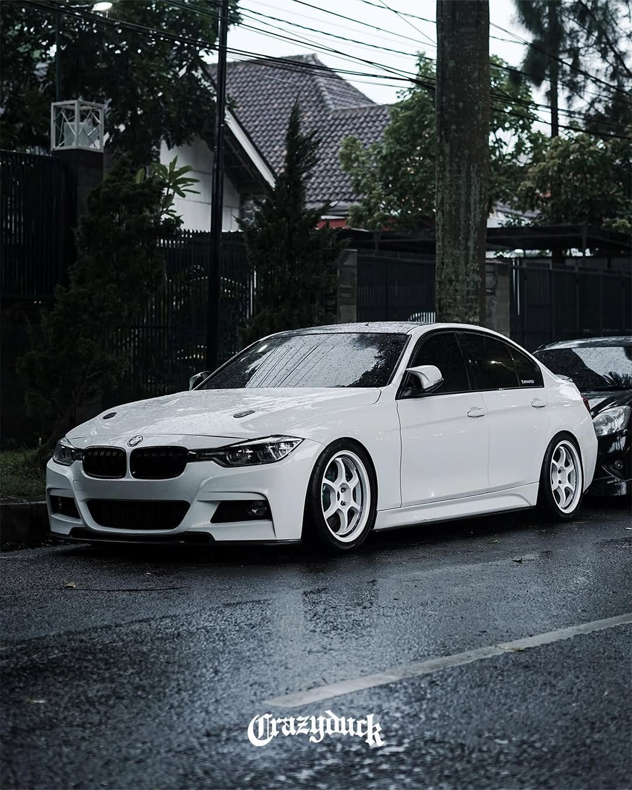
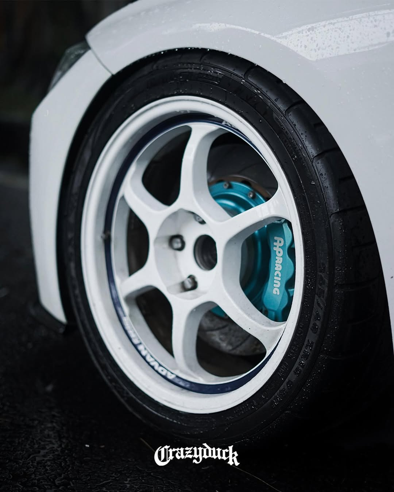
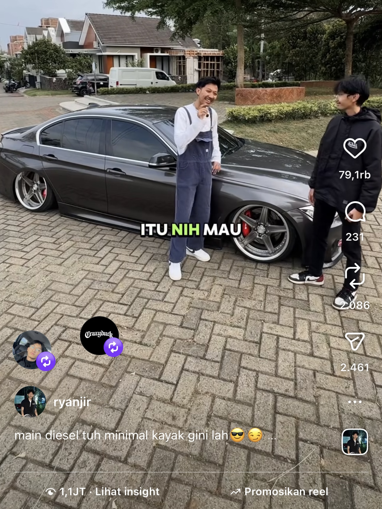
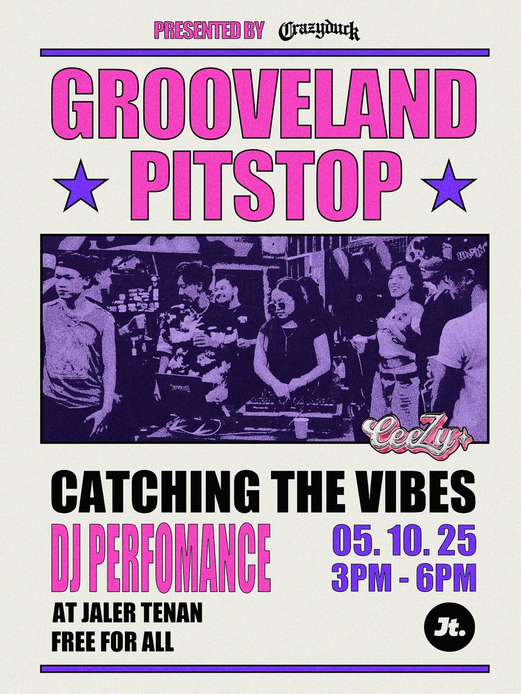
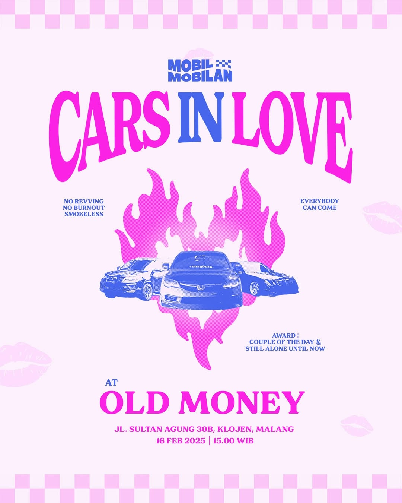

GRAPHIC
Designer
2025
PORT FOLIO
DESIGN
BRANDING
GRAPHIC
Designer
2025
DESIGN
BRANDING

Artikel ku Dari Deru Mesin ke FYP: Cerita Kecil Konten Besar” Buat sebagian orang, mobil itu cuma kendaraan. Tapi buat kreator otomotif, setiap mobil punya karakter. Tugasnya? Bikin penonton bisa ngerasain karakter itu walaupun cuma lewat layar 6 inci. Proses bikin video 10–30 detik? Halah, yang keliatan simpel justru paling ribet: 🎬 Rekaman panas-panasan di parkiran 🛠 Ngulang take karena bayangan kamera ganggu ⌛ Editan sampai mata berair 😅 Upload… lalu harap-harap cemas Tapi semua terbayar begitu muncul komentar: “Wah jadi ngerti fungsi ini!” “Fix langsung coba di mobil besok!” “Masukin keranjang KUNING dulu 👀👇” Saat itu juga muncul rasa bangga. Ternyata konten kecil bisa bantu banyak orang lebih peduli sama kendaraannya. Bukan cuma hobi — tapi jadi jembatan antara edukasi dan entertainment. Selama knalpot masih bersuara dan inovasi otomotif makin kenceng berkembang, inspirasi nggak bakal kehabisan bahan bakar.
2021 – Started Creating on TikTok Mulai berbagi konten otomotif dengan fokus pada edukasi ringan, tips perawatan, dan hal-hal seru seputar mobil di kehidupan sehari-hari. 2022 – First Brand Collaboration Kesempatan pertama bekerja sama dengan brand otomotif ternama untuk campaign digital. Dari sini makin yakin bahwa konten otomotif bisa berdampak besar. 2024 – Brand Ambassador, PRO7 Lighting Resmi menjadi Brand Ambassador untuk brand lampu PRO7. Sebuah milestone penting yang jadi pembuktian konsistensi, kualitas konten, dan koneksi kuat dengan komunitas otomotif.
Tiktok: @ryanjir
Instagram: @ryanjir




